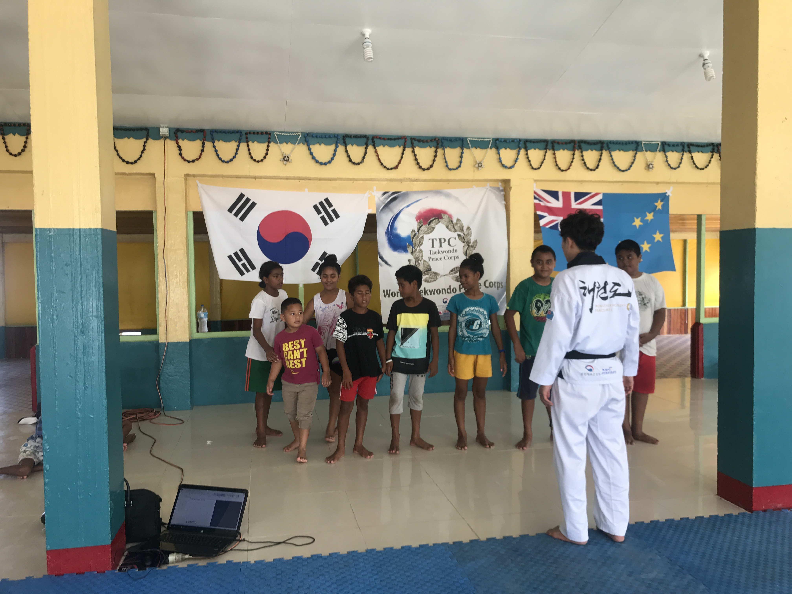
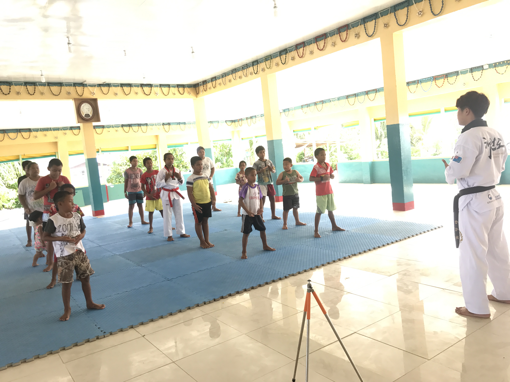
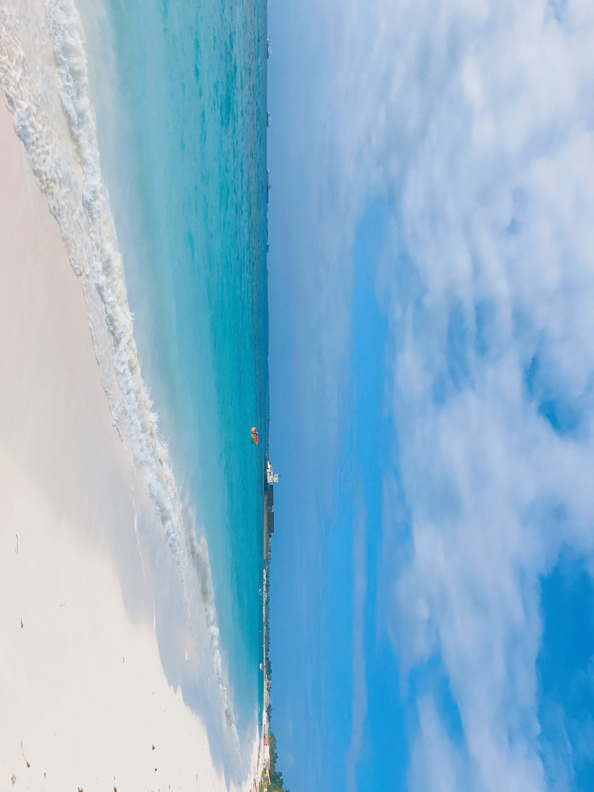
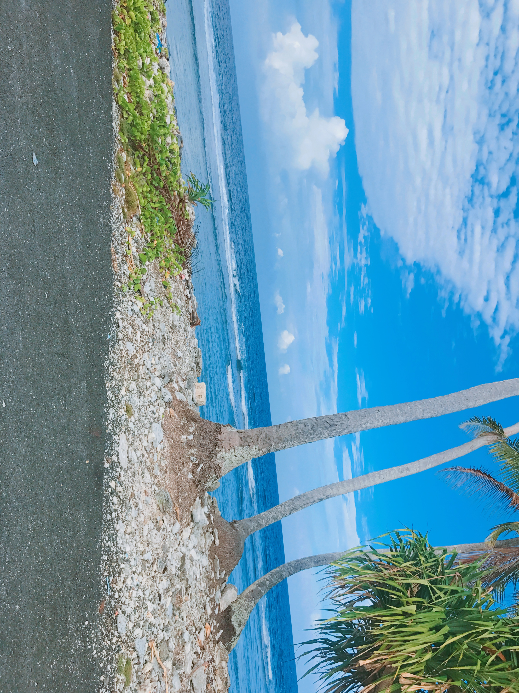
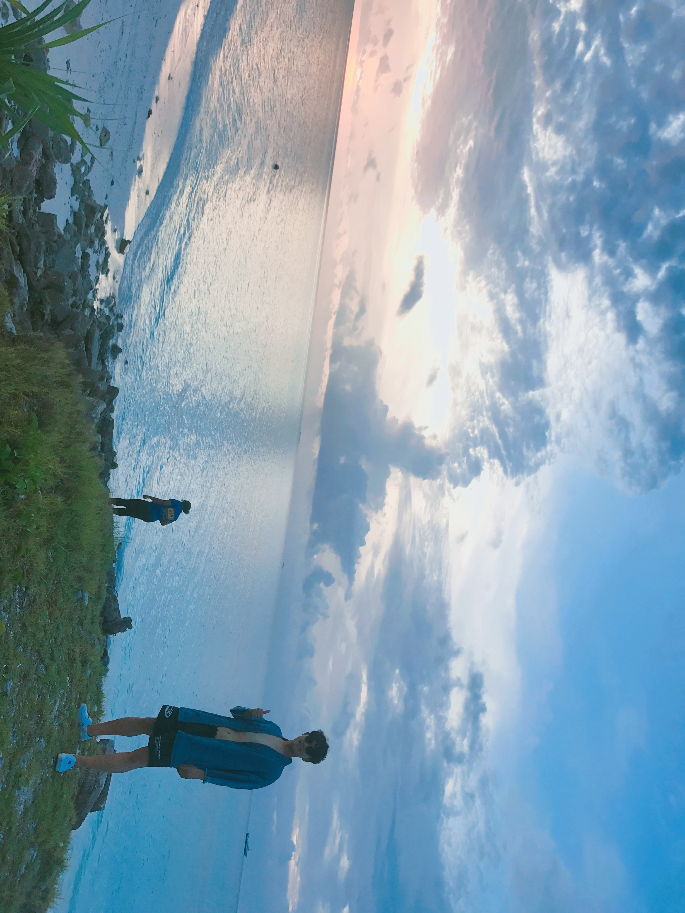
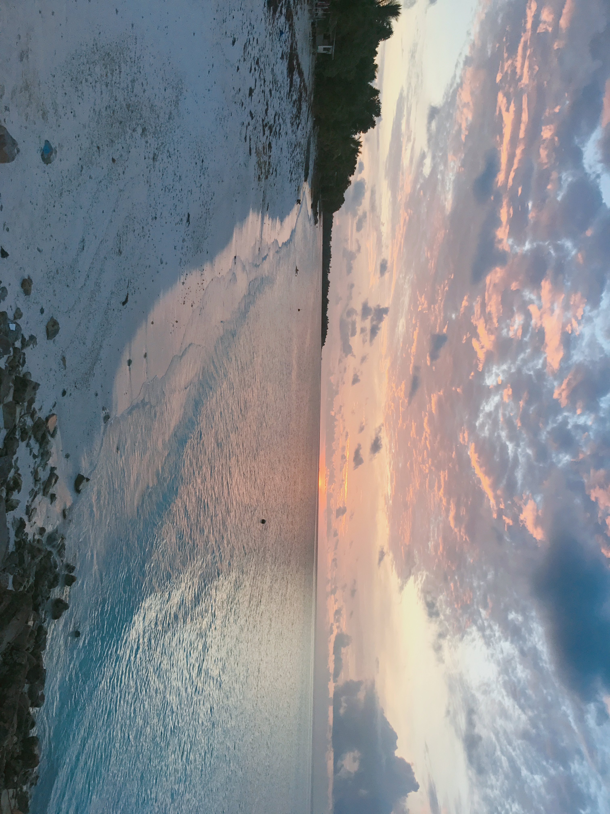
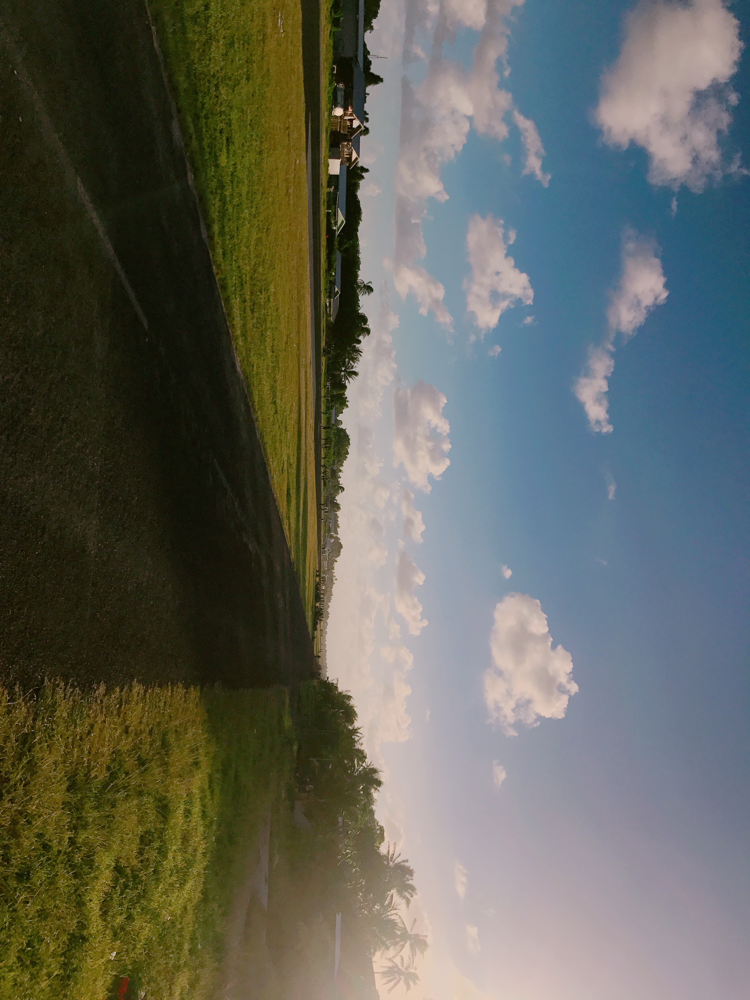
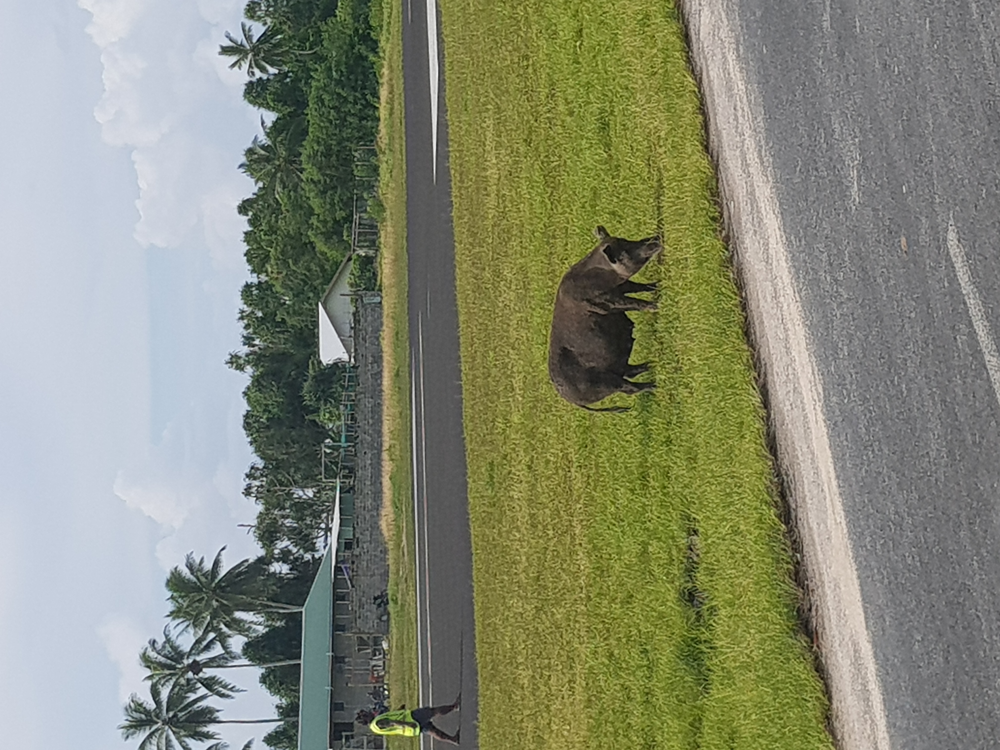

세계의 정보를 수집하고 팩트체크를 통해 실시간으로 사람들에게 전달하는 마케팅 일을 하고 있습니다.
이름처럼 밝고 환한 앞날을 향해 삶을 개척해 나가고 싶습니다.
뚜렷한 목표 하나보다, 누구와 함께하든 그 순간만큼은 서로 행복하고 의미 있는 시간이 되길 바랍니다.
언제든 편하게 찾아올 수 있는 사람, 그리고 그런 공간이 되는 것 —
그게 제 목표이자, 지금 이 순간에도 실천하고 있는 삶의 방식입니다.
살아오면서 경험하고 만들어온 것들을 소개합니다.
남태평양 한가운데, 인구 5천 명의 작은 섬나라 투발루.
태권도 문화외교단으로 파견되어 현지 아이들에게 태권도를 가르쳤습니다. 바다처럼 맑고 순수한 사람들, 밤하늘을 가득 채우던 별똥별 — 지금도 눈을 감으면 선명하게 떠오르는 곳입니다.








평소에 좋아하는 것들을 모아봤어요.